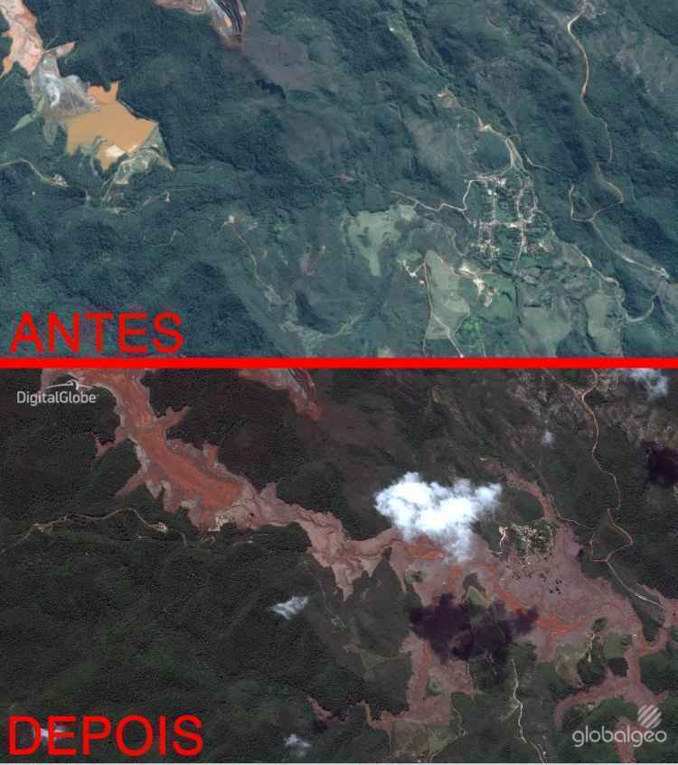
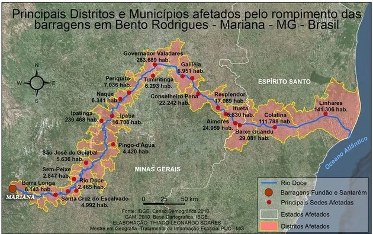
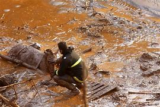
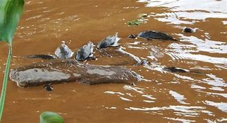
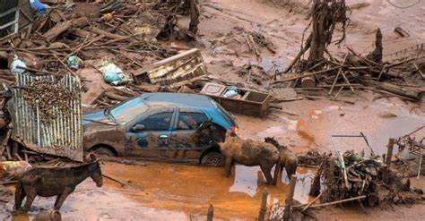
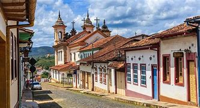
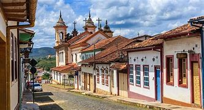
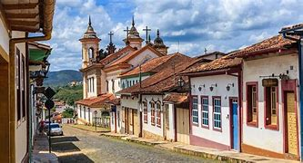

Tema:Rompimento da Baragem do Fundão,em Mariana/Mg(2015)
O que é um "desastre ambiental?
Desastre ambientais é eventos que acontecem no meio natural e que apresentam consequências negativas para
os ecossistemas e para os seres humanos
Diferanças entre desastres ambientais e desastres naturais
Desastres Naturais:
Os desastres naturais são eventos produzidos pela natureza sem intervenção humana e que afetam gravemente as
pessoas
Desastres Ambientias:
Os desastres ambientais são causados pela ação humana.
Rompimento da Barragem do Fundão,em Mariana
O que foi o "Rompimento da Barragem do Fundão,em Mariana"?
O Rompimento da Baragem Do fundão, foi a maior tragédia ambienatal da historia do Basil.Deixando 19 mortos.

Onde occoreu?
Ocorreu na cidade de Mariana, em Minas Gerais,porém a lama chegou em 39 cidades nos estados dew Minas Gerais e
Espírito Santo,onde moram cerca de 1,2milhões de habitantes,que infelimente viram suas vidas sendo destrídas...

Quais os elementos contaminantes?
os principais elementos contaminates que foram liberados foram:
Ferro:Principal substância presente nos rejeitos da barragem foi o ferro.O ferro em grande quantidade
pode causar impactos na qualidade da água,tornando a água acida e ajudando com a morte de organismos
aquáticos.
Alumínio: O alumínio é um componente comum dos rejeitos de mineração e pode ter efeitos tóxicos em
peixes e outros organismos aquáticos quando presente em concentrações elevadas.
Manganês: Também presente nos rejeitos de minério, o manganês pode afetar negativamente a qualidade da
água e a saúde de organismos aquáticos.
Cobre: O cobre é um elemento potencialmente tóxico que pode ser encontrado em rejeitos minerais e pode
prejudicar a saúde dos ecossistemas aquáticos em concentrações elevadas.
Arsênio: Embora menos comum, o arsênio pode estar presente em alguns tipos de rejeitos de mineração e é
altamente tóxico. Ele pode ter efeitos prejudiciais sobre a saúde humana e o meio ambiente.
Metais Pesados: Além dos elementos mencionados, outros metais pesados, como o chumbo e o cádmio, podem
estar
presentes em menor quantidade. Esses metais são conhecidos por sua toxicidade e persistência no meio
ambiente.
Sólidos Suspensos: O rompimento da barragem também liberou grandes quantidades de sólidos suspensos, que
podem assorear corpos d'água e afetar a qualidade do habitat aquático.
Sedimentos: Os sedimentos liberados contêm uma mistura de minerais e substâncias químicas que podem
afetar a qualidade da água e do solo.
Qual a extensão do desastre?
A extensão foi de 600Km, afetando diretamente 41 cidades com água contaminada.
Como afetou as pessoas?
Impacto na Saúde
Problemas de Saúde: A exposição à água contaminada e aos sedimentos tóxicos causou uma série de
problemas de
saúde, incluindo doenças de pele, problemas respiratórios e outras condições relacionadas à
contaminação.
Saúde Mental: O trauma e o estresse associados ao desastre tiveram um impacto significativo na saúde
mental das
vítimas, causando ansiedade, depressão e outros problemas emocionais
Perda de vidas
Foram 19 mortes na tragédia
Essa foi uma vitimas do desastre
Deslocamento e Perda de Habitação
Deslocamento Forçado: Muitas pessoas foram forçadas a abandonar suas casas devido à inundação e
destruição causadas pela lama. Isso resultou no deslocamento temporário ou permanente de comunidades
inteiras.
Destruição de Propriedades: Casas, empresas e infraestruturas foram destruídas, deixando muitos sem lar
e sem meios de subsistência.
Impactos Econômicos
Perda de Renda: A destruição de propriedades e a contaminação de recursos naturais afetaram
negativamente a capacidade das pessoas de gerar renda. Muitas pessoas perderam seus empregos ou meios de
subsistência, especialmente aqueles que dependiam da agricultura, pesca e turismo.
Compensações e Recuperação Econômica: A compensação financeira e os esforços de recuperação econômica
foram desafiadores e muitas vezes inadequados para cobrir as perdas sofridas.
Impactos Ambientais e Culturais
Destruição de Ecossistemas: A lama tóxica destruiu habitats naturais e causou a morte de animais e
plantas, prejudicando o meio ambiente local.
Perda de Patrimônio Cultural: Algumas áreas afetadas tinham significados culturais e históricos para as
comunidades, e a destruição desses locais causou perda de patrimônio cultural e identitário.
Impactos Ambientais e Culturais
Destruição de Ecossistemas: A lama tóxica destruiu habitats naturais e causou a morte de animais e
plantas, prejudicando o meio ambiente local.
Perda de Patrimônio Cultural: Algumas áreas afetadas tinham significados culturais e históricos para as
comunidades, e a destruição desses locais causou perda de patrimônio cultural e identitário.
Como afetou os animais?
Durante a avalanche de lama, a maioria dos peixes morreram e como resultado 26 espécies desapareceram da área.
Enquanto isso, animais terrestres como pequenos mamíferos e anfíbios foram soterrados pela lama. As árvores
próximas aos trechos dos rios foram arrancadas pela força da água ou ficaram submersas.



Fotos dos animais
Como afetou o solo?
O solo foi contaminado pela enxurrada de lama, tornando-se infértil e impedindo o desenvolvimento das espécies
vegetais. A composição química do solo foi alterada e não se sabe de que forma e quanto tempo demorará para se
restabelecer.
Hoje, como está o local? Pôde ser recuperado? Como?
Recuperação Ambiental:
Contaminação e Reabilitação: O Rio Doce e outros corpos d'água foram severamente contaminados pelos rejeitos de
mineração. A recuperação inclui ações para limpar e tratar esses corpos d'água, bem como a reabilitação dos
ecossistemas adjacentes. Programas de monitoramento contínuo são realizados para avaliar a qualidade da água e a
recuperação da fauna e flora.
Restauração da Vegetação: Projetos de reflorestamento e recuperação da vegetação nativa foram implementados para
ajudar a restaurar a biodiversidade e estabilizar o solo.
Recuperação das Comunidades:
Infraestrutura e Habitação: Muitos residentes perderam suas casas e meios de subsistência. O processo de
reconstrução tem sido um desafio, envolvendo a construção de novas moradias, reestruturação de infraestrutura e
compensações financeiras. A implementação de programas sociais para apoiar as comunidades afetadas também faz
parte dos esforços de recuperação.
Compensação e Apoio Psicológico: Há um esforço contínuo para compensar as vítimas e fornecer suporte psicológico
e social para ajudar as pessoas a superar o trauma e reconstruir suas vidas.
Aspectos Legais e de Segurança:
Responsabilização e Compensação: A Vale e a BHP Billiton, responsáveis pela barragem, têm enfrentado processos
legais e foram obrigadas a pagar indenizações e financiar projetos de recuperação. A aplicação e fiscalização de
normas de segurança também foram reforçadas para prevenir futuros desastres.
Regulamentações e Normas: Houve uma revisão das regulamentações para barragens e operações de mineração para
melhorar a segurança e reduzir o risco de novos acidentes.
Em resumo, a recuperação da área afetada pelo rompimento da barragem de Mariana é um processo em andamento e
contínuo, com desafios significativos em termos de recuperação ambiental e social. Enquanto alguns progressos
foram feitos, a completa recuperação é um objetivo a longo prazo que requer um esforço contínuo e coordenado
entre autoridades, empresas e comunidades.

o que poderia ser feito evitado
Projetos de Engenharia e Manutenção Adequados:
Inspeções e Manutenção Rigorosas: Realizar inspeções regulares e rigorosas da estrutura da barragem para
identificar e corrigir problemas antes que se tornem críticos.
Projetos de Engenharia de Alta Qualidade: Utilizar técnicas de engenharia avançadas e seguir normas de
construção rigorosas para garantir a segurança da estrutura da barragem
.
Gestão e Monitoramento:
Monitoramento Contínuo: Implementar sistemas de monitoramento em tempo real para detectar sinais de falhas
estruturais, como mudanças na pressão ou deformações.
Planos de Contingência: Desenvolver e manter planos de emergência e resposta a desastres bem elaborados, e
garantir que todos os funcionários e comunidades locais estejam treinados para responder adequadamente.
Regulamentação e Supervisão:
Cumprimento de Normas: Assegurar que todas as operações de mineração e barragens sigam as regulamentações e
normas de segurança estabelecidas.
Fiscalização Independente: Promover uma fiscalização independente e rigorosa das práticas de mineração e da
segurança das barragens, evitando conflitos de interesse e garantindo a conformidade com as leis.
 
